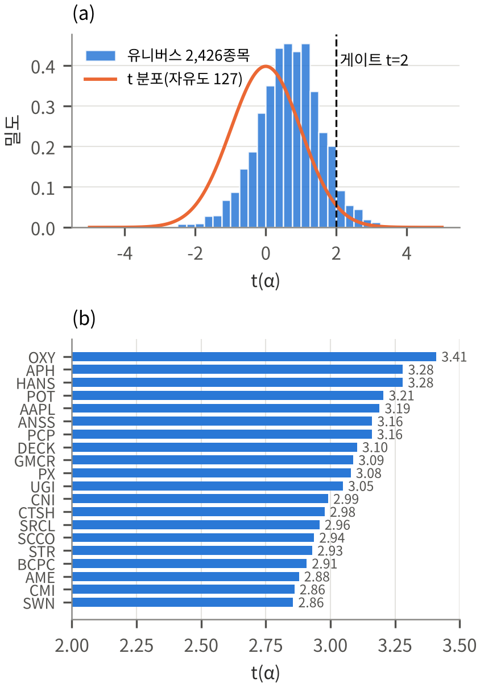

4단계 퀀트 투자 프레임워크 및 방법론 상세
고전적 평균-분산 최적화(Markowitz, 1952)의 추정 오차 민감성(Michaud, 1989)을 극복하기 위해 설계된 ① Fama-French 3-Factor 알파 스크리닝 → ② 워크포워드 머신러닝 수익률 예측 → ③ 블랙-리터만 뷰 통합 → ④ 제약 조건부 최적화 백테스트의 수학적 정식화와 데이터 엔지니어링 규약을 상세히 기술합니다.
1 원천 데이터셋 및 전처리 규약 (1_Project_Data)
2000년 1월부터 2020년 12월까지 총 21년(252개월)의 미국 주식시장 및 거시경제 데이터를 결합하여 생존편향과 식별자 오류를 통제했습니다.
| 데이터셋 | 출처 (Source) | 수집 기간 및 빈도 | 주요 변수 및 전처리 방식 | 파이프라인 활용 단계 |
|---|---|---|---|---|
| 미국 개별 주식 패널 | WRDS CRSP Monthly Stock File | 2000.01 – 2020.12 (월별, 1,105,651건) + 2021.01 – 2025.12 (OOS 연장) |
PERMNO(고유 종목코드), RET(월수익률), DLRET(상장폐지 수익률), PRC(종가), VOL(거래량), SHROUT(상장주식수) |
Stage 1 종목 선정, Stage 2 ML 학습/예측, Stage 3 시총 가중치($w_{mkt}$), Stage 4 수익률 평가 |
| Fama-French 3-Factor | Kenneth R. French Data Library | 2000.01 – 2020.12 (월별) | 시장 초과수익률($MKT\text{-}RF$), 규모 팩터($SMB$), 가치 팩터($HML$), 월 무위험수익률($RF$) | Stage 1 FF3 시계열 회귀 및 Stage 3 롤링 팩터 로딩($\hat{s}_i, \hat{h}_i$) 추정 |
| 무위험 이자율 (Risk-Free Rate) | FRED (Federal Reserve Economic Data) | 2000.01 – 2020.12 (월별) | GS1(1년 만기 미 국채금리, 기본 무위험이자율) 및 FEDFUNDS(유효 연방기금금리, 강건성 비교용). 연율(%)을 월 단리 $r_{f,t} = (\text{Rate}_t/100)/12$로 변환 |
Stage 3 균형수익률($\Pi$), Stage 4 샤프 비율 산출 |
| 시장 벤치마크 지수 | Yahoo Finance (^SP500TR) |
2011.01 – 2020.12 (월별) + 2021.01 – 2025.12 |
S&P 500 Total Return Index (현금배당 재투자 포함). CRSP RET가 배당 포함 총수익률이므로 공정한 비교를 위해 가격지수가 아닌 총수익지수 사용 |
Stage 4 벤치마크 성과 및 국면(Regime) 정의 |
CRSP 원천 데이터의 상장폐지 월에는 일반 수익률(RET)이 결측이거나 상장폐지 정산 수익률(DLRET)과 분리되어 기록됩니다.
본 프로젝트는 Shumway(1997) 표준에 따라 두 수익률이 모두 존재할 때 복리 결합 공식
$$R_{i,t}^{\text{total}} = (1 + RET_{i,t})(1 + DLRET_{i,t}) - 1$$
을 적용하여 인수·합병 및 상장폐지 시점의 실제 투자자 귀속 수익률을 정확히 반영했습니다.
또한 티커 변경(예: HANS → MNST Monster Beverage, POT → NTR Nutrien)으로 인한 시계열 단절을 막기 위해 모든 내부 연산을 불변 코드인 PERMNO 기준으로 수행했습니다.
미래정보 누수(Look-ahead Bias)를 원천 차단하기 위해 전체 21년 데이터를 세 구간으로 엄격히 분리했습니다:
• 2000.01 – 2010.12 (132개월): FF3 알파 스크리닝을 통한 20개 투자 유니버스 확정 및 ML 초기 학습 구간
• 2005.01 – 2010.12 (72개월): 블랙-리터만 뷰에 필요한 과거 예측 오차 분산 추정용 In-sample History 구간
• 2011.01 – 2020.12 (120개월): 실제 포트폴리오 리밸런싱 및 성과 평가 구간 (Out-of-Sample Backtest)
2 Stage 1: Fama-French 3-Factor 알파 스크리닝 (2_FF3)
수천 개의 상장주식에서 공분산 행렬 추정이 안정적인 20개 핵심 종목으로 압축하되, 단순 시가총액이 아닌 '통계적으로 검증된 팩터 알파'를 기준으로 선별합니다.
FF3 시계열 회귀 모형 및 Appraisal Ratio 동치성
2000년 1월부터 2010년 12월까지 132개월 동안 결측 없이 관측된 완전 균형 패널(Balanced Panel) 2,426개 종목 각각에 대해 OLS 회귀를 수행합니다:
여기서 $\hat{\alpha}_i$의 $t$-통계량은 다음과 같이 정의됩니다:
모든 종목이 동일한 132개월의 팩터 행렬 $X$를 공유하므로 상수 $c = [(X^\top X)^{-1}_{00}]^{-1/2}$가 전 종목에 동일합니다. 따라서 $t(\hat{\alpha}_i)$ 기준 순위는 Treynor & Black(1973)의 Appraisal Ratio($\hat{\alpha}_i / \hat{\sigma}_{\varepsilon,i}$, 고유 위험 단위당 초과수익) 순위와 수학적으로 100% 일치합니다.
4단계 종목 선정 게이트 및 통계적 유의성 진단
- 완전 관측 패널 필터: 2000.01–2010.12(132개월) 동안 수익률·거래량·시총 결측이 없는 2,426개 종목 추출.
- 유동성 필터 (Liquidity Gate): 기간 평균 월 거래량이 하위 20%에 해당하는 저유동성 종목 제외 (극단적 거래비용 및 가격왜곡 방지).
- 변동성 가드 (Sigma Guard): 개별 종목의 월수익률 표준편차가 시장 초과수익률 표준편차의 2배를 초과($\sigma_i > 2\sigma_{\text{MKT}}$)하는 투기적 고변동성 종목 제외.
- 알파 유의성 게이트 & Top 20 랭킹: $\hat{\alpha}_i > 0$ 이고 $t(\hat{\alpha}_i) \ge 2.0$ (자유도 127 양측 $p \approx 0.048$)을 통과한 131개 종목 중 $t(\hat{\alpha}_i)$ 상위 20개 종목을 최종 투자 유니버스로 확정.
• 기대 위양성 대비 3.3배 초과 관측: 2,426개 독립 검정 가정 시 귀무가설($\alpha_i=0$) 하에서 우연히 $\hat{\alpha}>0, t \ge 2$를 만족할 기대 종목 수는 $2426 \times 0.024 = 58.6$개이나, 실제 통과 종목은 196개(필터 포함 시 131개)로 우연 대비 3.3배 이상 집중됨.
• Benjamini-Hochberg FDR: 선정된 20개 종목 중 상위 6개는 $q \le 0.10$, 20개 전 종목은 $q \le 0.172$ 이내.
• 잔차 부트스트랩 ($B=2,000$): 비정규성(왜도·첨도)을 보존한 부트스트랩 검정에서도 20개 전 종목 $p_{\text{boot}} \le 0.0445$로 유의성 유지.

| # | Ticker | 기업명 (Company Name) | PERMNO | $t(\hat{\alpha})$ | 연율 $\hat{\alpha}_{\text{ann}}$ | $\hat{\beta}_{\text{MKT}}$ | $\hat{s}_{\text{SMB}}$ | $\hat{h}_{\text{HML}}$ | $R^2$ | 2000–10 Sharpe | 2011–20 평균비중 |
|---|
3 Stage 2: 워크포워드 머신러닝 수익률 예측 (4_Module_Based_ML)
Gu, Kelly & Xiu (2020, RFS)의 자산가격결정 프레임워크를 따라 8개 가격·거래량 특성으로 개별 주식의 다음 달 수익률 $\hat{r}_{i,t+1}$을 예측합니다.
입력 특성 벡터 $x_{i,t} \in \mathbb{R}^8$ 정의
| 특성명 | 수식 및 산출 정의 ($t$월 말 시점 관측) | 경제적 의미 (문헌 근거) |
|---|---|---|
mom1m |
$r_{i,t}$ (당월 수익률) | 단기 수익률 반전 (Jegadeesh, 1990) |
mom6m |
$\prod_{k=1}^{5}(1+r_{i,t-k}) - 1$ (직전 5개월 누적) | 중기 모멘텀 (Jegadeesh & Titman, 1993) |
mom12m |
$\prod_{k=1}^{11}(1+r_{i,t-k}) - 1$ (직전 11개월 누적) | 연간 추세 지속성 (1개월 스킵 모멘텀) |
chmom |
$\text{mom6m}_{i,t} - \text{mom6m}_{i,t-6}$ | 모멘텀 가속도 / 변화율 (Gettleman & Marks, 2006) |
retvol |
$\text{Std}(r_{i,t-11:t})$ (최근 12개월 표준편차) | 총 수익률 변동성 (Ang et al., 2006) |
log_volume |
$\ln(|PRC_{i,t}| \times VOL_{i,t} + 1)$ | 달러 거래대금 유동성 (Chordia et al., 2001) |
beta |
36개월 롤링 CAPM 시장 베타 $\hat{\beta}_{i,t}$ | 체계적 시장 위험 노출도 (Fama & MacBeth, 1973) |
idiovol |
36개월 롤링 CAPM 잔차 표준편차 $\hat{\sigma}_{\varepsilon,i,t}$ | 고유 변동성 비대칭 효과 (Ang et al., 2006) |
Expanding-Window 워크포워드 학습 프로토콜
개별 종목 시계열(월 1개 관측치)만으로는 비선형 모델 학습 표본이 부족하므로, Gu, Kelly & Xiu(2020)와 동일하게 전체 CRSP 상장종목 풀링 패널(Pooled Panel, 약 28만~49만 종목-월 관측치)에서 공통 예측 함수 $f_\theta: \mathbb{R}^8 \to \mathbb{R}$를 학습한 뒤, 선정된 20개 종목의 특성 $x_{i,t}$를 대입하여 $\hat{r}_{i,t+1} = f_\theta(x_{i,t})$를 산출합니다.
- 연간 재학습 시점: 2004년 12월부터 2019년 12월까지 매년 12월 말(총 16회) 모델을 재학습하여 다음 해 1~12월의 월별 예측에 사용.
- 시간순 검증 분리 (Temporal Validation Split): 각 재학습 시점 $T_{\text{fit}}$까지의 가용 데이터 중 마지막 36개월을 검증 세트(Validation)로, 그 이전 구간을 학습 세트(Train)로 분리하여 검증 MSE가 최소인 하이퍼파라미터를 선택.
- 누수 없는 스케일링: 특성 표준화(StandardScaler)의 평균·표준편차는 오직 학습 세트에서만 계산하여 검증 및 테스트 세트에 적용.
| 모델 (담당) | 계열 및 구조 | 하이퍼파라미터 탐색 그리드 및 규제 | OOS $R^2$ (전체 유니버스) | 20종목 평균 IC | $t(\text{IC})$ | IC > 0 월 비중 | M4 결합 시 Net CAGR |
|---|---|---|---|---|---|---|---|
| XGBoost (Main) 나근석 · 남현주 |
Gradient Boosted Decision Trees | max_depth $\in \{1, 2\}$, lr $\in \{0.01, 0.1\}$, subsample $= 0.8$, colsample $= 0.8$, Early Stopping (patience 20) |
+0.60% | +0.040 | 1.37 | 53.7% | 19.68% |
| Elastic Net 백상준 |
$L_1 + L_2$ 규제 선형 회귀 | alpha $\in [10^{-4}, 10^{1}]$ (10개 로그 격자), l1_ratio $\in \{0.1, 0.5, 0.9\}$ |
+0.56% | +0.031 | 1.12 | 59.7% | 19.46% |
| RandomForest 황도훈 |
배깅 앙상블 결정트리 | n_estimators $= 100$, max_depth $\in \{3, 5, 7\}$, max_features $\in \{\text{sqrt}, 0.5\}$ |
+0.58% | +0.047 | 1.98 | 56.7% | 18.85% |
| Transformer 김도현 · 나근석 |
Multi-Head Self-Attention 시계열 모형 | d_model $= 32$, nhead $= 4$, num_layers $= 2$, Dropout $0.2$, AdamW |
+0.48% | +0.032 | 1.22 | 60.8% | 17.40% |
| ANN (3-Layer MLP) 백상준 |
다층 퍼셉트론 신경망 (64-32-16) | ReLU + BatchNorm + Dropout($0.3$), $L_2$ weight decay $10^{-4}$, Early Stopping | +0.19% | -0.006 | -0.25 | 47.5% | 15.07% |
4 Stage 3: 블랙-리터만 뷰 행렬($P, Q, \Omega$) 및 베이지안 통합 (5_BL_Fin)
시장 균형 사전분포($\Pi$)와 머신러닝 예측 뷰($P, Q$)를 결합하여 사후 기대수익률($\mu_{BL}$)과 사후 공분산($\Sigma_{BL}$)을 도출합니다.
베이지안 사전·사후 분포 수학적 정식화
$\Omega_t = \tau D_t$ ($D_t \equiv \operatorname{diag}(P_t\Sigma_t P_t^\top)$)를 $\mu_{\text{BL},t}$ 식에 대입하면, 첫 번째 괄호에서 $\tau^{-1}$이 묶여 나오고 두 번째 괄호의 $\tau^{-1}$과 정확히 상쇄됩니다: $$\mu_{\text{BL},t} = \left[\Sigma_t^{-1} + P_t^\top D_t^{-1} P_t\right]^{-1}\left[\Sigma_t^{-1}\Pi_t + P_t^\top D_t^{-1} Q_t\right]$$ 즉, 사후 기대수익률 $\mu_{\text{BL},t}$는 스칼라 $\tau$ 값에 수학적으로 완전히 독립(Invariant)이며, $\tau$는 오직 사후 공분산 $\Sigma_{\text{BL},t}$의 스케일만 미세 조정합니다. (실제 $\tau \in \{0.05, 0.1, 0.2\}$ 민감도 테스트에서 CAGR이 19.72%, 19.68%, 19.61%로 거의 동일하게 나타나는 이론적 이유입니다.)
8가지 뷰 행렬($P$) 구성 방식 비교 (M1 ~ M5)
ML 모델이 예측한 20개 종목의 수익률 벡터 $\hat{r}_{t+1} \in \mathbb{R}^{20}$을 블랙-리터만 뷰 방정식 $P_t \mu = Q_t + \varepsilon_t$로 변환하는 8가지 방식을 설계·비교했습니다 (단, 모든 뷰에서 $Q_t = P_t \hat{r}_{t+1}$로 일관되게 정의):
| 코드 | 뷰 차원 ($K \times N$) | 구성 원리 및 특징 |
|---|---|---|
M1_SMB |
$1 \times 20$ 상대 뷰 | 직전 36개월 롤링 FF3 회귀의 $\hat{s}_{i,\text{SMB}}$ 기준 상위 50% 매수(+1/10), 하위 50% 매도(-1/10)하는 소형주-대형주 롱숏 뷰 |
M1_SMB_fixed |
$1 \times 20$ 상대 뷰 | 2000–2010년 고정 $\hat{s}_{i,\text{SMB}}$ 기준으로 구성한 정적 SMB 롱숏 뷰 |
M2_HML |
$1 \times 20$ 상대 뷰 | 직전 36개월 롤링 $\hat{h}_{i,\text{HML}}$ 기준 상위 50% 매수, 하위 50% 매도하는 가치주-성장주 롱숏 뷰 |
M2_HML_fixed |
$1 \times 20$ 상대 뷰 | 2000–2010년 고정 $\hat{h}_{i,\text{HML}}$ 기준으로 구성한 정적 HML 롱숏 뷰 |
M3_SMB_HML |
$2 \times 20$ 상대 뷰 | 롤링 SMB 뷰(1행)와 롤링 HML 뷰(2행)를 결합한 2차원 팩터 상대 뷰 |
M3_SMB_HML_fixed |
$2 \times 20$ 상대 뷰 | 고정 SMB 뷰와 고정 HML 뷰를 결합한 2차원 정적 팩터 뷰 |
M4_Identity (Main) |
$20 \times 20$ 절대 뷰 | $P_t = I_{20}, \ Q_t = \hat{r}_{t+1}$. 20개 종목 각각의 ML 예측치를 정보 손실 없이 1:1 절대 뷰로 직접 주입 |
M5_Proportional |
$1 \times 20$ 상대 뷰 | 당월 ML 예측치 $\hat{r}_{i,t+1}$의 횡단면 평균 편차($\hat{r}_i - \bar{\hat{r}}$)에 비례하여 매수·매도 가중치를 부여하는 단일 상대 뷰 |
5 Stage 4: 제약 조건부 최적화 및 백테스트 프로토콜 (6_Backtest)
현실적인 기관투자자 운용 제약(Long-Only, 20% 단일종목 상한, 거래비용, 상장폐지 처리)을 반영한 120개월 월간 리밸런싱 엔진입니다.
SLSQP 평균-분산 효용 극대화 정식화
• 수치 해법: scipy.optimize.minimize(method='SLSQP') (ftol $= 10^{-12}$, maxiter $= 1000$).
• 단일 종목 20% 상한 ($w_i \le 0.20$): 최소 5개 이상의 종목에 분산 투자하도록 강제하여 특정 초대형주(예: AAPL, 시총가중 시 평균 64%)로의 과도한 쏠림을 방지합니다.
거래비용(20bp) 및 상장폐지(Delisting) 처리 규약
• 상장폐지 4개 종목 처리: 백테스트 기간 중 인수·합병으로 상장폐지된 4개 종목(PCP 2016.01, GMCR 2016.03, STR 2016.09, PX 2018.10)은 상장폐지 당월까지의 DLRET 결합 수익률을 실현한 뒤, 다음 달 리밸런싱부터 생존 종목($20 \to 16$개)으로 유니버스를 자동 축소하여 재배분합니다.